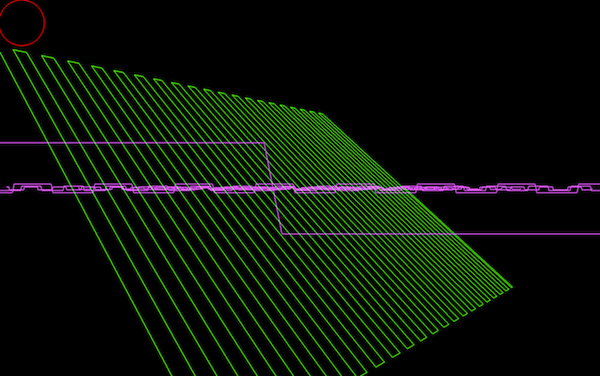

RISER GENERATOR
BY: MARLON FISCHER
NYU CPROGRAMMING FOR MUSIC TECHNOLOGY
Program Info
This program combines graphic simulation and a multi-waveform synth that allows for the user to interact with the interface. The program utilizes OpenGL, Portaudio, and a library called BiquadFilter. The way in which I impliments the BiquadFilter library is in the portaudio callback function so that the audio would pass through the 2 filters before going the output. The library contains functions that allow for the audio to be routed though a buffer, into the function, and returned so that it can be assigned to the output. One of the main functions of the program deals with the red circle, drawn with Opengl, this is where the usage of the program exists. The red circle in the window represents one way that the user can interact with the program. By moving this circle 2 different parameters are controlled. On the X axis, left to right, a low pass filter's frequency is changed, left being lowest frequency and right being highest. On the right side there is a slight high pass filter for effect. On the Y axis, up and down, the synthesizers frequency is changed, down being lowest and up being highest. Another way the user can interact with the program is by using the keyboard, inputing single key commands. One of these commands is for the circle to rise from the bottom left corner to the top right corner on its own. By allowing the circle to move in this direction, diagonally, the pitch and low pass filter's frequency move together, creating a "riser". In accordance with the last command, automated riser, is the reset key which will place the circle back in its starting postion. Not only can the user control the sound with the circle but they can also control the graphics displayed on the screen. When the circle is moved in any direction, and the green waveform movement is turned on, the speed and direction of this green waveform will change automatically. The further towards the edges the circle is, the faster the green waveform will turn. If the user is unhappy with the waveform the synth is utilizing, or are curious to see the others, then they have the opportunity to switch between 4 different waveforms. There is a sine wave, a triangle wave, a saw wave, and a square wave (in that order), and they can be chosen using a single key command. Other functionality that this program allows is to toggle a full screen mode and to mute the audio, which will display nothing on the graphics.
Intended use
This program was made to be routed into either a digital audio workstation or outside source. In order to route the audio anywhere from this program the user must change his/her default audio output. In order to route into a DAW a third party program is recommended. This program has been tested with soundflower and is fully functional in any DAW that can have its input settings set up to this program, meaning most. In order to run the program the user must locate the file without an extension, this is the executable file, and double click on it. This will open the application and also bring up the terminal. The terminal is where you can see the help menu, and tell whether the auto rise is on or not. If the application does not open, or crashes, try to open the application again. if this does not work then the user will have to re-make the application. In order to do so you must move into the folder that the program is located in and type in the console "make clean && make" without the parenthesis. The program at this time should be functional and the normal means of opening the application should work. Once the application is open remember that the 'q' button is how to quit. you must also exit out of the terminal manually by clicking on the top left most bubble in the window. This program has only been tested on a mac, but this should also function on a PC and Linux as long as the proper libraries are installed.
WARNING!
If the red circle seams to be stuck in any position, press the 's' button to reset the circle.
Resources
The BiquadFilter library can be found at: BIQUADFILTER GITHUB
Key and mouse commands
- 'h' - print this help message
- 'f' - toggle fullscreen
- click and drag mouse up and down - change pitch frequency
- click and drag mouse left and right - change lowpass frequency
- 'spacebar' - automatically move circle to top right corner
- 's' - bring circle back to bottom left corner
- 'w' - change waveform
- 'm' - mute audio
- 'arrow keys' - turn on green waveform movement
- 'q' - quit
Screen shot of the riser gen interface
Included in the zip file is:
riser_generator(executable file) riser_generator.c Biquad.c Biquad.h Makefile(in order to recompile the code)